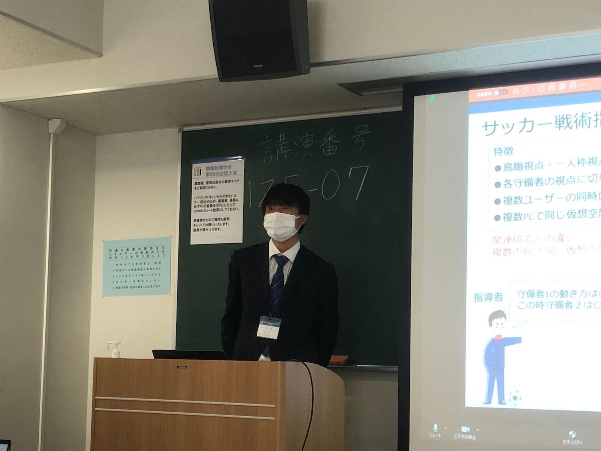

Laboratory Life
Date: March 2nd - 4th, 2023 Location: The University of Electro-Communicatinos
Overview
Our laboratory's members, Mr. Nishimura and Mr. Sato, gave a research presentation at The 85th National Convention of Information Processing Society of Japan.

<Presentation Details>
Presenter: Nishimura Ikkyu
Title: "Detecting Cultural Differences in Word Recall Images Using Anomaly Detection"
Abstract:
In recent years, with the improvement of machine translation accuracy, multilingual communication has become easier. However, cultural differences between speakers can still cause misunderstandings in conversations. To detect such cultural differences, we perform image searches from both Japanese and English words associated with a single concept, and detect cultural differences based on the similarity of the obtained images. However, there is a possibility that the obtained images may include images that are different from the target image, so we use anomaly detection methods to calculate the confidence of each image, and perform noise removal and image vector generation based on the confidence.
Presenter: Nishimura Ikkyu
Title: "Detecting Cultural Differences in Word Recall Images Using Anomaly Detection"
Abstract:
In recent years, with the improvement of machine translation accuracy, multilingual communication has become easier. However, cultural differences between speakers can still cause misunderstandings in conversations. To detect such cultural differences, we perform image searches from both Japanese and English words associated with a single concept, and detect cultural differences based on the similarity of the obtained images. However, there is a possibility that the obtained images may include images that are different from the target image, so we use anomaly detection methods to calculate the confidence of each image, and perform noise removal and image vector generation based on the confidence.

Presenter: Sato Asahi
Title: "Analysis of the Effectiveness of Synchronized Soccer Tactical Coaching Using Virtual Space"
Abstract:
When soccer coaches provide tactical guidance, it can be difficult for players with poor spatial cognition abilities to understand the tactics because the presentation is often from a bird's-eye view or third-person perspective. Virtual environments have been used to support spatial cognition by providing guidance from a first-person perspective. However, switching between different first-person perspectives can be necessary for presenting the desired information. Therefore, we developed a synchronized soccer tactics guidance system that enables the simultaneous presentation of multiple first-person perspectives. In this study, we analyze the effects of sharing the same situation from different first-person perspectives using our developed system.
Title: "Analysis of the Effectiveness of Synchronized Soccer Tactical Coaching Using Virtual Space"
Abstract:
When soccer coaches provide tactical guidance, it can be difficult for players with poor spatial cognition abilities to understand the tactics because the presentation is often from a bird's-eye view or third-person perspective. Virtual environments have been used to support spatial cognition by providing guidance from a first-person perspective. However, switching between different first-person perspectives can be necessary for presenting the desired information. Therefore, we developed a synchronized soccer tactics guidance system that enables the simultaneous presentation of multiple first-person perspectives. In this study, we analyze the effects of sharing the same situation from different first-person perspectives using our developed system.